The same reinforcement-learning loop that trains billion-parameter language models, pointed at real fluid dynamics — on a laptop, in plain numpy, in minutes. One brain is about a thousand numbers. The other is eight.
Vizuara AI Labs · RL in Production, Bonus Lecture
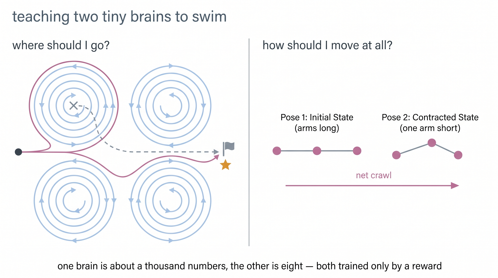
Two questions, two agents. Left: a robot slower than the current must learn where to go. Right: a micro-machine must learn how to move at all — because at its scale, ordinary flapping achieves exactly nothing.
An agent looks at the world (the state), does something (an action), and gets a number telling it how well that went (the reward). It tries things, keeps what earns reward, and repeats. That is the entire idea — everything else is engineering.
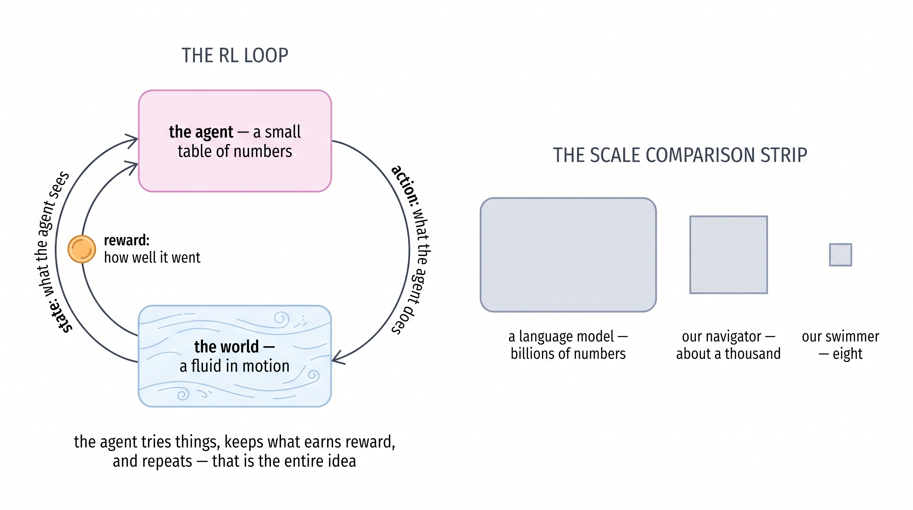
Imagine crossing a river to reach a dock on the far bank — but the current is three times faster than you can swim. Point yourself at the dock and paddle, and the river simply carries you past it. Every ferryman in history has known the answer: you do not aim at where you want to go. You aim upstream, and let the river deliver you.
Our version of the river is a classic of fluid dynamics: the Taylor–Green vortex lattice, a checkerboard of spinning whirlpools that is one of the very few flows with an exact pen-and-paper solution. That is the whole trick that makes this a laptop project — the "simulation" is two lines of numpy, so every second of compute goes into learning, not physics.
The robot swims at speed 0.3. The current peaks at 1.0. It must reach a target disc on the far side of the lattice.
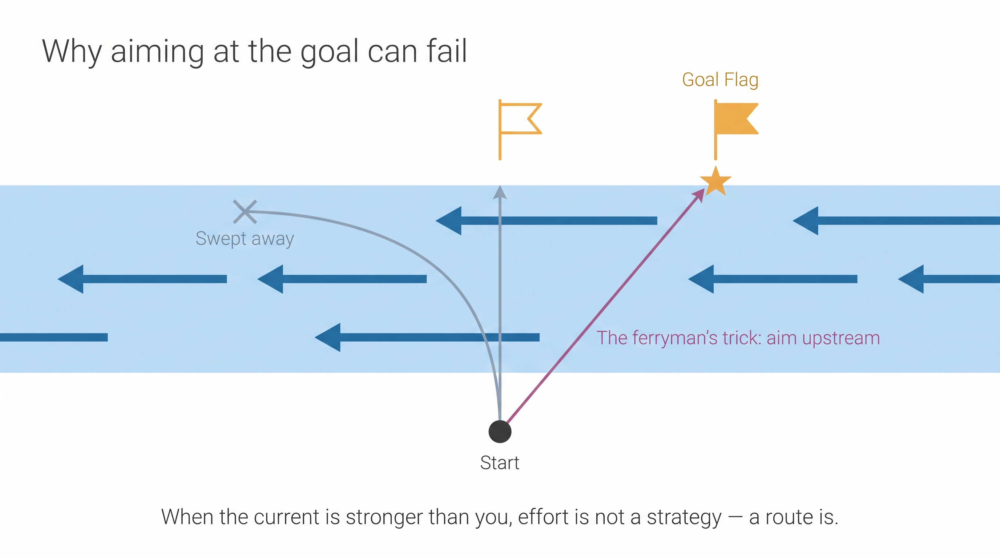
If you took our Phase-1 lectures, you have already trained this exact problem — as the windy gridworld, where a textbook wind shoves you off course. One change turns that toy into physics: the wind is now a real, exactly-solved fluid, and it can be stronger than you.
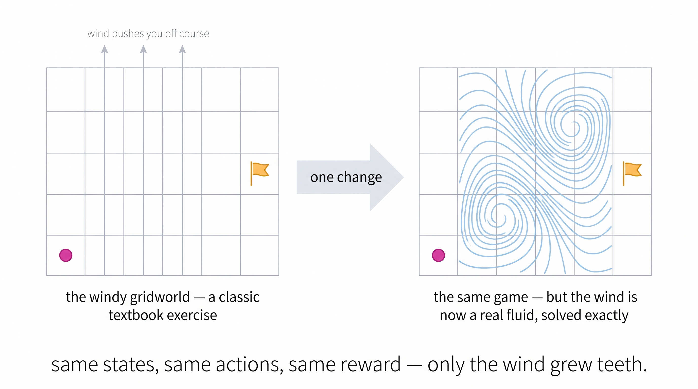
We gave the obvious strategy every possible courtesy: it picks, at every instant, the compass heading pointing most directly at the target — chosen from the exact same eight actions the learning agent gets. In still water it would be optimal.
In this current, 42% of naive robots never arrive at all. The river bends their path, sweeps them past the goal, and traps them in endless loops around whirlpools — the tight purple spirals in the figure. They are still paddling toward the target when the episode ends. Effort was never the missing ingredient.
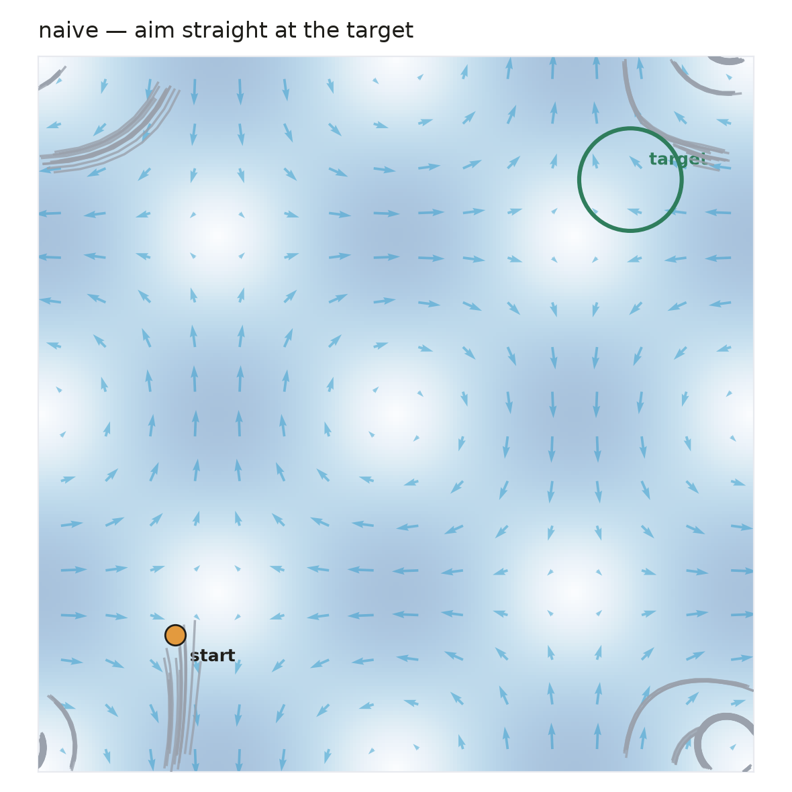
The learner is tabular Q-learning — the very first algorithm of our bootcamp. Its entire brain is a table: one row per map cell, one column per compass heading, about a thousand numbers. Five hundred robots explore in parallel, sharing that one table. Training takes ninety seconds on a laptop.
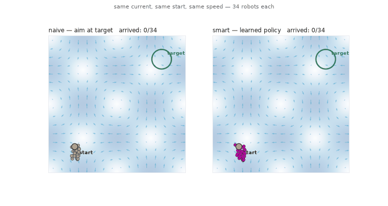
| strategy | robots that ever arrive | median journey (arrivers only) |
|---|---|---|
| aim straight at the target | 57.9% | 18 ticks |
| learned (Q-table) | 100.0% | 21 ticks |
Read that middle column honestly: the naive median looks competitive — but it only counts the lucky 58% that made it. This is the same lesson our language-model studies keep teaching: reinforcement learning's real product is reliability.
And what did it actually learn? The ferryman's trick, from scratch. Trained robots swim away from the target first, ride a favourable jet across the lattice, and enter from the far side. Some routes even wrap around the map's periodic edge — going the "wrong" way around the world, because that way travels with the current.
Nobody engineered any of that. The reward was −1 per tick. Detours emerged because slow routes and drownings punish themselves.
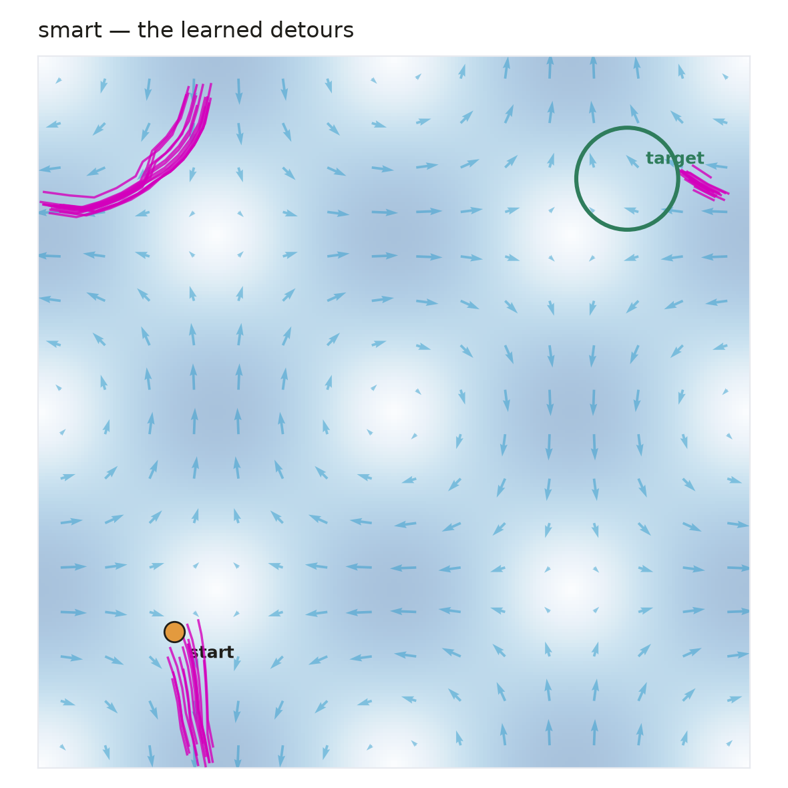
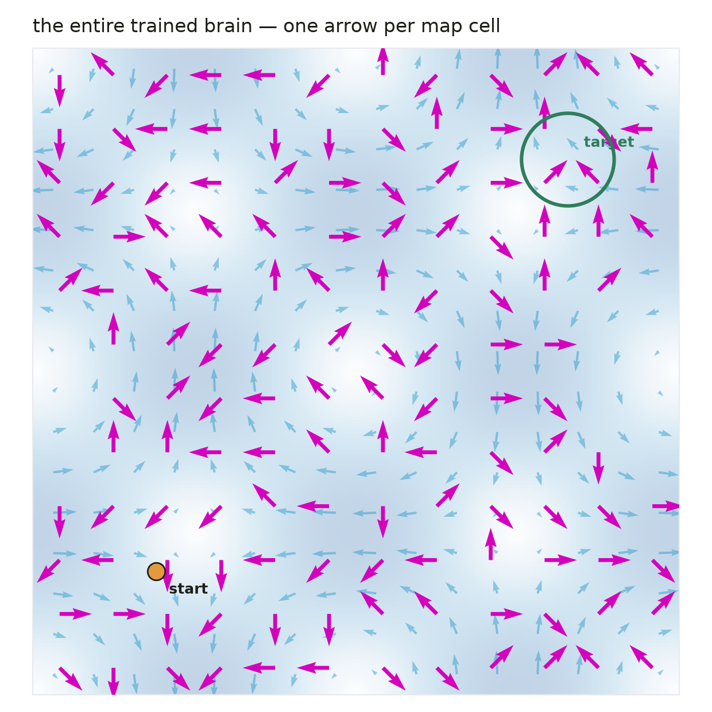
Our second agent has a stranger problem. It does not need to learn where to go. It needs to learn how to move at all.
At the scale of a microbe, water stops behaving like water. Inertia — the coasting and gliding your intuition is built on — becomes irrelevant: stop moving and you halt instantly, as if swimming through honey.
In that world a brutal rule holds, called the scallop theorem (E. M. Purcell, 1977): whatever a stroke pushes you forward, the exact reverse of that stroke pulls you back exactly as much. A scallop, which can only open and close its shell, is mathematically incapable of swimming. Any back-and-forth flapping, no matter how fast or forceful, adds up to precisely zero.
The only escape: a stroke that never retraces itself.
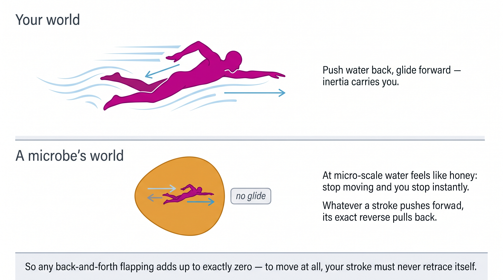
The simplest machine that can escape was proposed by two physicists, Ali Najafi and Ramin Golestanian, in 2004: three beads on a line, joined by two arms, each arm either long or short. Four possible shapes. We simulate it with the honest physics — at every instant the fluid drag on all three beads is balanced exactly (the Stokes mobility problem), so the distance it moves per stroke emerges from hydrodynamics. It is never looked up.
State: which of the 4 shapes the machine is in. Action: squeeze or stretch one of the 2 arms. Reward: how far the machine's centre actually moved, signed — drifting backward punishes itself. The complete brain is a 4×2 table: eight numbers.
Given nothing but "how far did I move", the eight-number brain discovers a repeating four-beat rhythm: squeeze the left arm, squeeze the right arm, stretch the left arm, stretch the right arm — and repeat. Watch what that sequence is: each arm goes long–short–long, but never in immediate reverse — the machine's shape travels a loop, the way an inchworm bunches up and stretches out. The honey rule can only cancel retraced steps, and this loop never retraces. So it crawls.
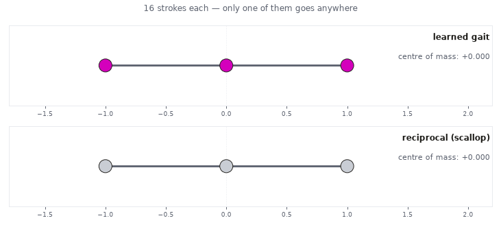
Two things make this result satisfying. First, the flapper's measured drift after 24 strokes is −0.0003 — our own simulation confirming a 1977 theorem to round-off precision, about 350× smaller than the crawl's +0.103.
Second, the crawl the agent invented is not just a solution — it is the solution physicists derived by hand two decades ago (and that an RL study by Tsang et al. later rediscovered at full scale). Our eight numbers found it in forty seconds of laptop time, from reward alone.
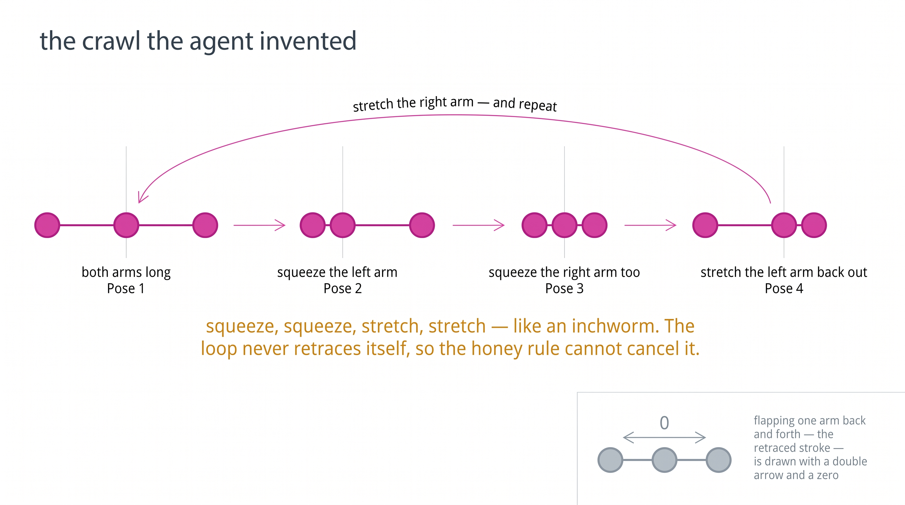
This is not just a toy insight. Here is a living micro-swimmer — the alga Chlamydomonas, about a hundredth of a millimetre, filmed under a microscope. Its two little arms do a breaststroke: a fast, extended power sweep and a slow, curled recovery. Fast-forward and rewind are different movies — the stroke never retraces itself, which is precisely why it works.
Evolution found the loop-in-shape-space trick a billion years before Purcell named the rule and our eight numbers rediscovered it.
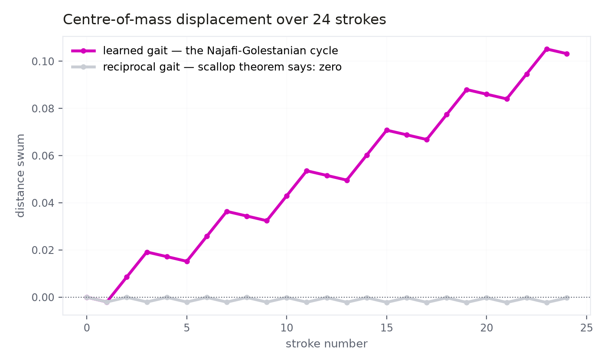
This project's first environment was not the navigator. It was a more biological problem — a bottom-heavy algae cell that rights itself toward "up" while vortices try to tumble it, with RL nudging the righting direction. We spent hours on it. Learning flatlined, and we assumed, as everyone does, that the algorithm needed tuning.
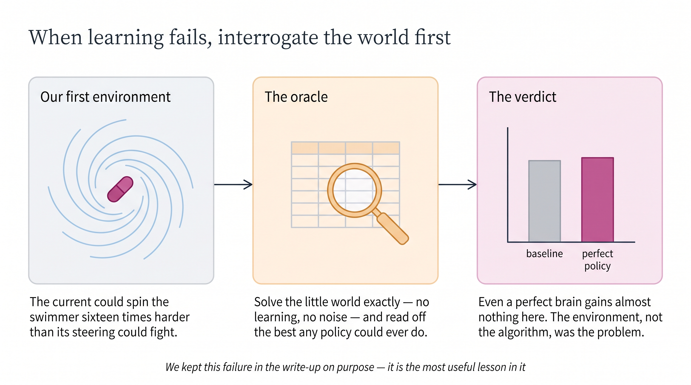
The oracle's verdict was final: in that environment, even a perfect brain could beat the naive swimmer by at most 25% — because the vortices could spin the swimmer sixteen times harder than its steering could fight. No observation we tried changed that. The bottleneck was never Q-learning. It was the physics of what the agent was allowed to do.
Control authority decides whether learning is possible at all. What the agent senses decides how much of the possible gain it can express. The algorithm only decides how fast you approach that ceiling. We rebuilt the environment around meaningful control — and Problem 1 is the result. The failed world ships in the repo as an open challenge.
No GPUs, no CFD software, no accounts. Two dependencies, three commands, about three minutes of total compute.
# setup python3 -m venv .venv && .venv/bin/pip install numpy matplotlib # problem 1 — the navigator (~90 s) .venv/bin/python -m swimmer.navigate # problem 2 — the inchworm (~40 s) .venv/bin/python -m swimmer.three_sphere # every figure and animation on this page, from your own runs .venv/bin/python scripts/make_result_figures_white.py all
Then break it. Move the target and watch the policy field reorganise. Make the flow unsteady and see if the naive baseline collapses further. Swap the Q-table for REINFORCE. Or take the open challenge: find a regime where the abandoned algae-cell world becomes learnable.
Biferale et al., Zermelo's problem via RL, Chaos 2019 · Colabrese et al., smart gyrotactic microswimmers, PRL 2017 · Najafi & Golestanian, the three-sphere swimmer, PRE 2004 · Tsang et al., self-learning to swim, PRFluids 2020 · Purcell, Life at Low Reynolds Number, 1977 · Reddy et al., learning to soar, PNAS 2016